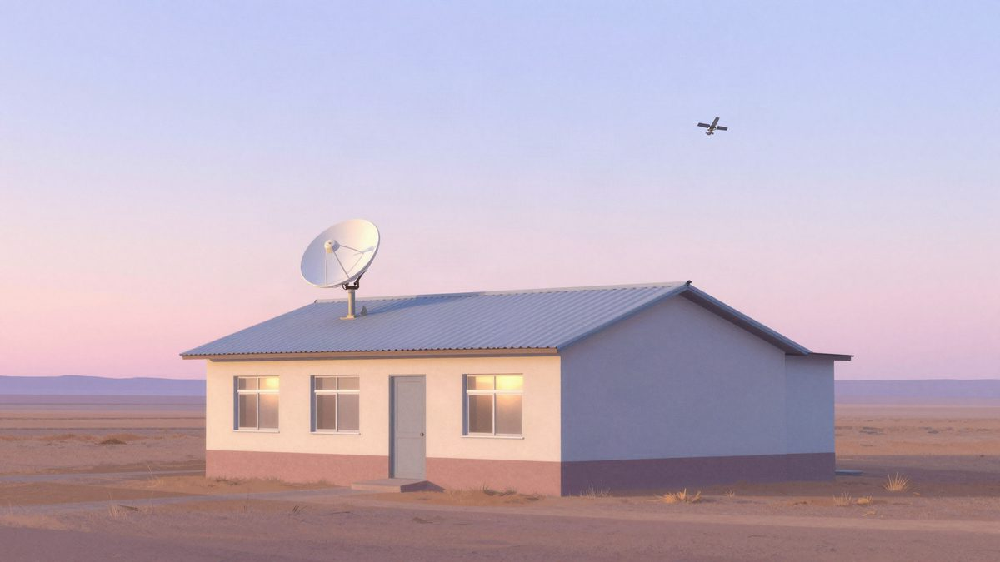

SpaceX Paragvaju dao 1.600 Starlink kompleta, 800 udaljenih škola već je online

SpaceX je Paragvaju predao 1.600 Starlink kompleta za škole u najudaljenijim krajevima, a u prvoj fazi spojeno je 800 škola. Program provodi državna tvrtka COPACO, a u širim planovima spominju se i bolnice. Rokovi za drugu i završnu fazu nisu poznati.
SpaceX je Paragvaju predao 1.600 kompleta satelitskog interneta Starlink za povezivanje škola u najudaljenijim dijelovima zemlje. Prvi dio programa je završen, pa je brzi internet dobilo 800 škola, među njima i škole u zajednicama starosjedilačkih naroda. Komplete su škole navodno dobile besplatno.
Projekt provodi COPACO, državna telekomunikacijska tvrtka Paragvaja. Oprema stiže u tri dijela: prvih 800 kompleta već je instalirano, za drugu fazu primljeno je još 400, a preostalih 400 planira se za završnu fazu. Ukupno će tako biti povezano 1.600 škola.
Najviše se računa na područja u kojima klasična širokopojasna veza praktički ne postoji. Samo u regiji Gran Chaco internet je dobilo 95 škola, uključujući one koje služe zajednicama starosjedilaca.
Program se ne odnosi samo na škole. U širim planovima povezivanja spominju se i bolnice te centri obiteljske medicine.
Prema procjeni iz izvora, tisuće djece iz udaljenih naselja dobit će pristup online nastavi, digitalnim udžbenicima i drugim materijalima koji im prije nisu bili dostupni.
Cijene i dostupnost u Europi nisu dio ove vijesti, jer se projekt odnosi samo na Paragvaj.
Izvor: iXBT
Povezani članci
- Musk: Starlink V4 imat će oko 100 laserskih veza po satelitu, svaka preko 10 Tbit/s8. studenoga 2026.
 Foundation je predstavio Phantom MKII: humanoidni robot za 91 kg tereta, kišu i prašinu20. studenoga 2026.
Foundation je predstavio Phantom MKII: humanoidni robot za 91 kg tereta, kišu i prašinu20. studenoga 2026.- Hakeri su navodno pokušali zagrijati zamrzivače francuske službe za krv s -30 na 110 °C4. studenoga 2026.